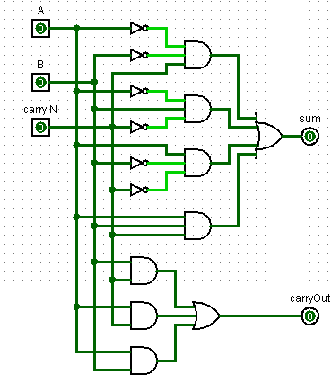
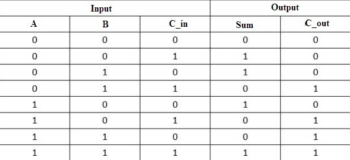
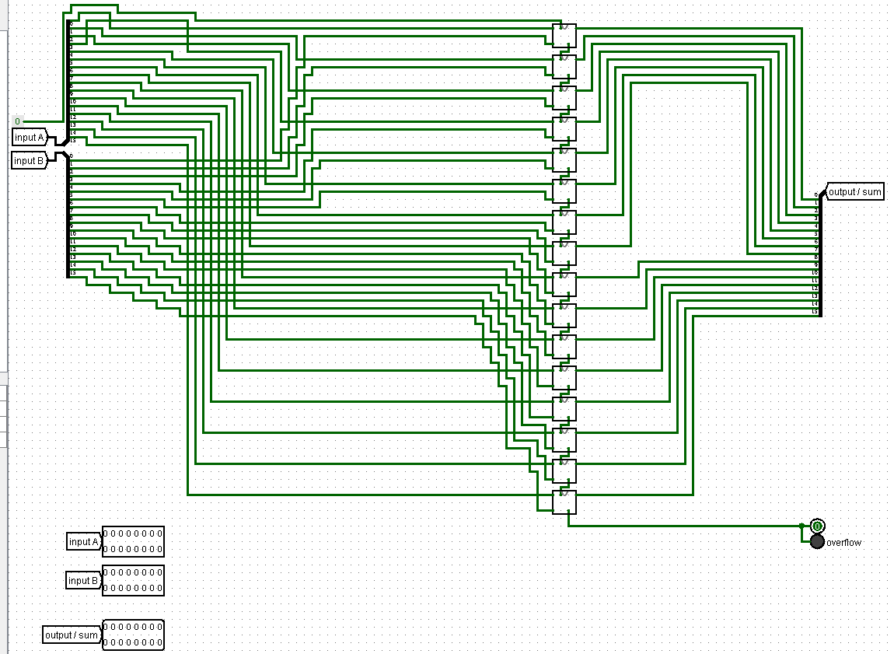
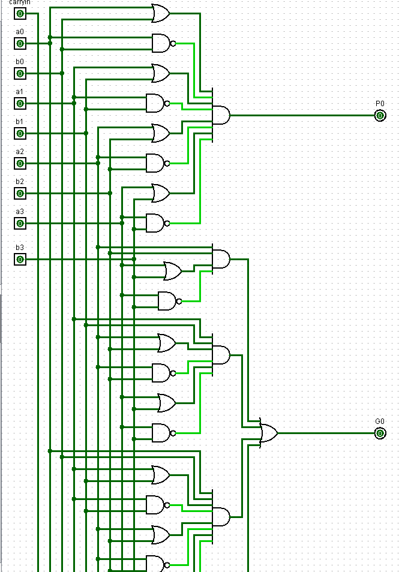
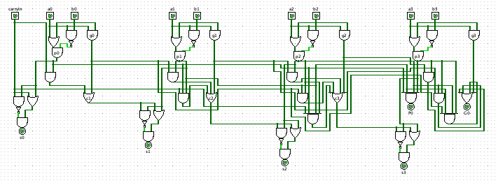
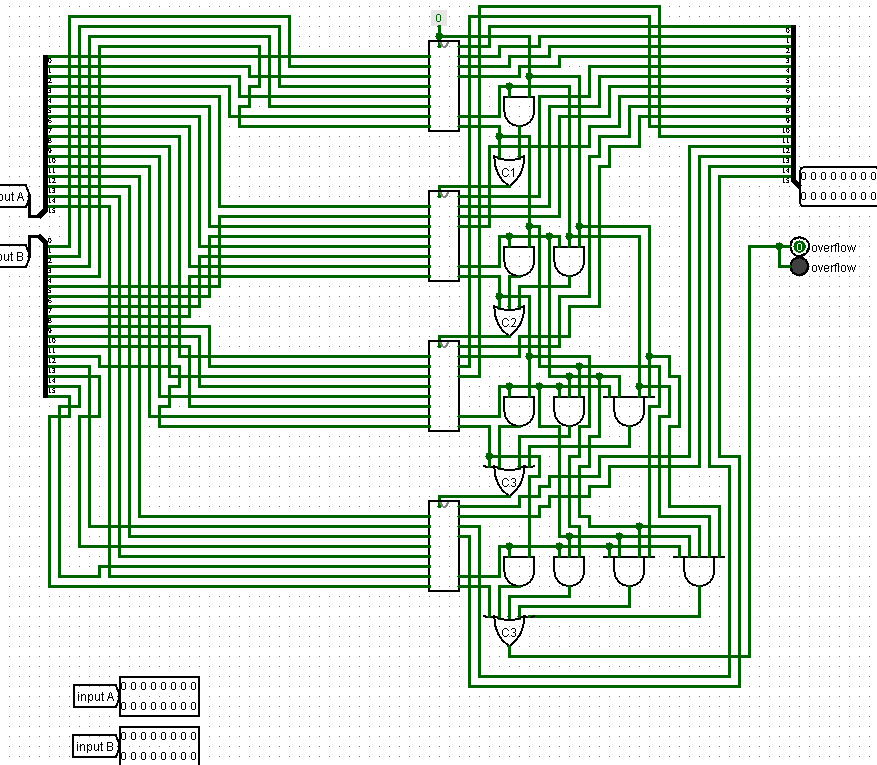
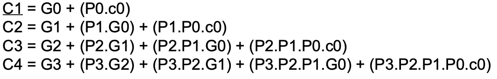

Verslag
Verslag
Titel: Project 2
Dit verslag werd opgesteld door:
- Naam: Max Etman
Studentennummer: 20204398
Email adres: Max.Etman@student.uantwerpen.be
- Naam: Pablo Deputter
Studentennummer: 20205440
Email adres: Pablo.Deputter@student.uantwerpen.be
Aantal man-uren besteed: 20 uur
Moeilijkheidsgraad: 7 /10
Verschillende links:
Home
Project1
Project3
Inhoud van de oplossing
De oplossing bestaat uit de volgende bestanden (geef alle bestanden op):
Verslag
Bestandstructuur
Bij deze opdracht hebben we besloten om alle oplossingen voor de opdrachten in een .circ bestand te stoppen, dit als apart subcircuits. Dit was bedoeld omdat we deze circuits nog later zouden nodig hebben voor andere opdrachten in dit project.
Opdracht 1
Na de truth table op te stellen en de boolean algebra te simplificeren was het vrij eenvoudig om de 1-bit adder op te stellen, we hadden wel even moeite om het 'carryIn' en het 'carryOut' systeem onder de hand te krijgen maar de rest verliep vlot. Hieronder een screenshot van de waarheidstabel en de de 1-bit full adder.


Opdracht 2
Hierbij moesten we een 16-bit 'ripple adder' bouwen. Dit werd gedaan door 16 1-bit 'full adders' van vorige opdracht naast elkaar te plaatsen en de 'carryOut' van de vorige adder te verbinden met de 'carryIn' van de volgende adder. De 'carryIn' van de eerste adder werd verbonden met een constante, 1. Alle inputs en outputs van de adders werden verbonden met een splitter. De splitter keert deze om met de meest significant bit vanboven. De laatste 'carryOut' werd verbonden met een 1-bit output en een LED lampje dat gaat branden wanneer er 'overflow' optreedt. Dit gebeurd wanneer het decimaal getal niet meer kan worden voorgesteld in binair met het maximum aantal gekozen bits, in dit geval is dit dus 16-bits. Hieronder een screenshot van het circuit.

Opdracht 3 + 4
Ik heb deze twee opdrachten samengesteld omdat ze bij elkaar horen
De eerste stap was om een 4-bit 'carry lookahead adder' te maken. Dit is een adder met minder vertraging dan een 'full adder', deze moet namelijk niet wachten op de 'carryIn' van de adder. Dit was voor ons beide zeer moeilijk te begrijpen, maar uiteindelijk zijn we er toch opgekomen met behulp van wat hulpmiddelen van het internet. Eerst hebben we deze zelf geconstrueerd en daarna hebben we deze met behulp van 'analyse' tool van Logisim dez wat ordelijker gemaakt. Dit zorgt er voor dat deze wat langer was, dus hieronder is een gedeeltelijke screenshot van de 4-bit CLA gemaakt met behulp van Logisim en diegene die we zelf in elkaar hebben gezet.


Het liep steeds fout bij het bouwen van de 16-bit CLA want we maakten gebruik van de 'carryIn' 4 en 'sum' 4 formule i.p.v. 'super-generate -en propagate'. Uitendelijk is het toch gelukt nadien ik de opname van de les herbekeek. Nadat we hadden uitgevonden dat we de verkeerde formules gebruikten hebben we de 4-bit CLA verbouwd dus kon er nooit een 'carryIn' worden doorgegeven aan de volgende adder. Deze konden we dan 4 keer naast elkaar gebruiken. De 'carryIn' van de eerste adder staat op 0. De 'carryIn' van de volgende adders wordt berekent met behulp van de 'super-generate -en propagate' van alle vorige adders. Dit betekent dus dat deze som exponentieel groeit. We konden bevestigen dat onze 16-bit CLA werkte door de outputs onze 16-bit 'ripple adder' er mee te vergelikken. Hieronder is een screenshot van het circuit van de 16-bit CLA en de formules die we gebruikt hebben.


We hadden geen idee hoe we de latency moesten bepalen van het circuit, dus deze opdracht hebben we helaas niet volledig kunnen voltooien, we weten wel dat de CLA veel sneller is en dat de 'ripple adder' te inefficient is.